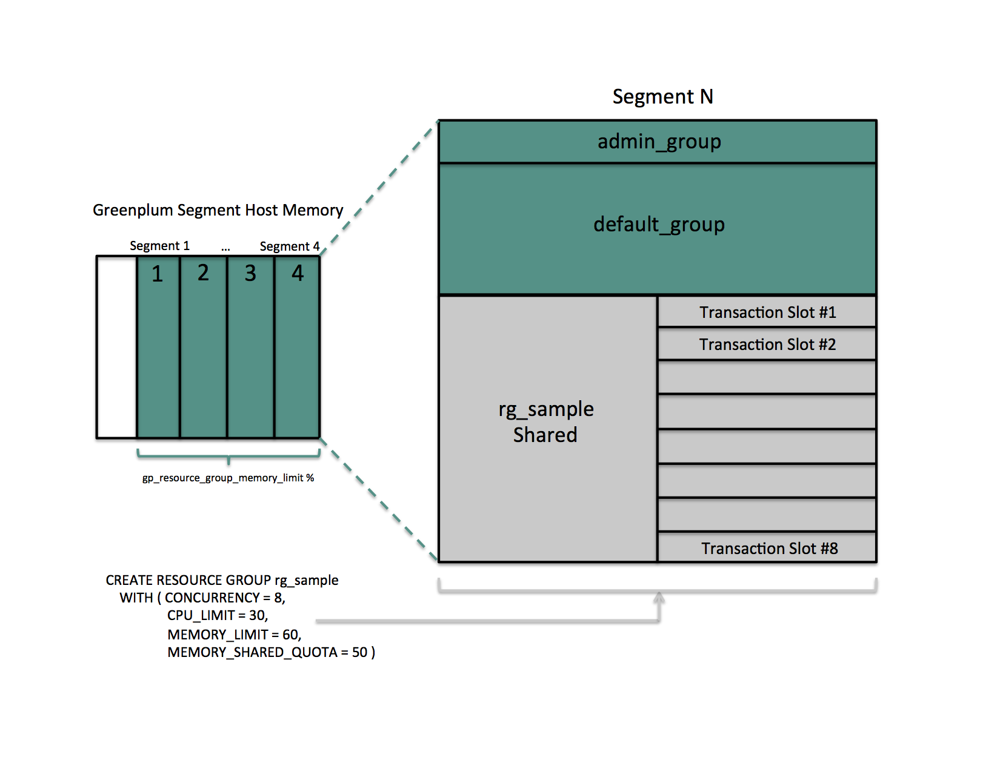

Using Resource Groups
You use resource groups to set and enforce CPU, memory, and concurrent transaction limits in SynxDB. After you define a resource group, you can then assign the group to one or more SynxDB roles, or to an external component such as PL/Container, in order to control the resources used by those roles or components.
When you assign a resource group to a role (a role-based resource group), the resource limits that you define for the group apply to all of the roles to which you assign the group. For example, the memory limit for a resource group identifies the maximum memory usage for all running transactions submitted by SynxDB users in all roles to which you assign the group.
Similarly, when you assign a resource group to an external component, the group limits apply to all running instances of the component. For example, if you create a resource group for a PL/Container external component, the memory limit that you define for the group specifies the maximum memory usage for all running instances of each PL/Container runtime to which you assign the group.
Understanding Role and Component Resource Groups
SynxDB supports two types of resource groups: groups that manage resources for roles, and groups that manage resources for external components such as PL/Container.
The most common application for resource groups is to manage the number of active queries that different roles may run concurrently in your SynxDB cluster. You can also manage the amount of CPU and memory resources that SynxDB allocates to each query.
Resource groups for roles use Linux control groups (cgroups) for CPU resource management. SynxDB tracks virtual memory internally for these resource groups using a memory auditor referred to as vmtracker.
When the user runs a query, SynxDB evaluates the query against a set of limits defined for the resource group. SynxDB runs the query immediately if the group’s resource limits have not yet been reached and the query does not cause the group to exceed the concurrent transaction limit. If these conditions are not met, SynxDB queues the query. For example, if the maximum number of concurrent transactions for the resource group has already been reached, a subsequent query is queued and must wait until other queries complete before it runs. SynxDB may also run a pending query when the resource group’s concurrency and memory limits are altered to large enough values.
Within a resource group for roles, transactions are evaluated on a first in, first out basis. SynxDB periodically assesses the active workload of the system, reallocating resources and starting/queuing jobs as necessary.
You can also use resource groups to manage the CPU and memory resources of external components such as PL/Container. Resource groups for external components use Linux cgroups to manage both the total CPU and total memory resources for the component.
Note Containerized deployments of SynxDB might create a hierarchical set of nested cgroups to manage host system resources. The nesting of cgroups affects the SynxDB resource group limits for CPU percentage, CPU cores, and memory (except for SynxDB external components). The SynxDB resource group system resource limit is based on the quota for the parent group.
For example, SynxDB is running in a cgroup demo, and the SynxDB cgroup is nested in the cgroup demo. If the cgroup demo is configured with a CPU limit of 60% of system CPU resources and the SynxDB resource group CPU limit is set 90%, the SynxDB limit of host system CPU resources is 54% (0.6 x 0.9).
Nested cgroups do not affect memory limits for SynxDB external components such as PL/Container. Memory limits for external components can only be managed if the cgroup that is used to manage SynxDB resources is not nested, the cgroup is configured as a top-level cgroup.
For information about configuring cgroups for use by resource groups, see Configuring and Using Resource Groups.
Resource Group Attributes and Limits
When you create a resource group, you:
- Specify the type of resource group by identifying how memory for the group is audited.
- Provide a set of limits that determine the amount of CPU and memory resources available to the group.
Resource group attributes and limits:
| Limit Type | Description |
|---|---|
| MEMORY_AUDITOR | The memory auditor in use for the resource group. vmtracker (the default) is required if you want to assign the resource group to roles. Specify cgroup to assign the resource group to an external component. |
| CONCURRENCY | The maximum number of concurrent transactions, including active and idle transactions, that are permitted in the resource group. |
| CPU_RATE_LIMIT | The percentage of CPU resources available to this resource group. |
| CPUSET | The CPU cores to reserve for this resource group on the master and segment hosts. |
| MEMORY_LIMIT | The percentage of reserved memory resources available to this resource group. |
| MEMORY_SHARED_QUOTA | The percentage of reserved memory to share across transactions submitted in this resource group. |
| MEMORY_SPILL_RATIO | The memory usage threshold for memory-intensive transactions. When a transaction reaches this threshold, it spills to disk. |
Note Resource limits are not enforced on
SET,RESET, andSHOWcommands.
Memory Auditor
The MEMORY_AUDITOR attribute specifies the type of resource group by identifying the memory auditor for the group. A resource group that specifies the vmtracker MEMORY_AUDITOR identifies a resource group for roles. A resource group specifying the cgroup MEMORY_AUDITOR identifies a resource group for external components.
The default MEMORY_AUDITOR is vmtracker.
The MEMORY_AUDITOR that you specify for a resource group determines if and how SynxDB uses the limit attributes to manage CPU and memory resources:
| Limit Type | Resource Group for Roles | Resource Group for External Components |
|---|---|---|
| CONCURRENCY | Yes | No; must be zero (0) |
| CPU_RATE_LIMIT | Yes | Yes |
| CPUSET | Yes | Yes |
| MEMORY_LIMIT | Yes | Yes |
| MEMORY_SHARED_QUOTA | Yes | Component-specific |
| MEMORY_SPILL_RATIO | Yes | Component-specific |
Note For queries managed by resource groups that are configured to use the
vmtrackermemory auditor, SynxDB supports the automatic termination of queries based on the amount of memory the queries are using. See the server configuration parameter runaway_detector_activation_percent.
Transaction Concurrency Limit
The CONCURRENCY limit controls the maximum number of concurrent transactions permitted for a resource group for roles.
Note The
CONCURRENCYlimit is not applicable to resource groups for external components and must be set to zero (0) for such groups.
Each resource group for roles is logically divided into a fixed number of slots equal to the CONCURRENCY limit. SynxDB allocates these slots an equal, fixed percentage of memory resources.
The default CONCURRENCY limit value for a resource group for roles is 20.
SynxDB queues any transactions submitted after the resource group reaches its CONCURRENCY limit. When a running transaction completes, SynxDB un-queues and runs the earliest queued transaction if sufficient memory resources exist.
You can set the server configuration parameter gp_resource_group_bypass to bypass a resource group concurrency limit.
You can set the server configuration parameter gp_resource_group_queuing_timeout to specify the amount of time a transaction remains in the queue before SynxDB cancels the transaction. The default timeout is zero, SynxDB queues transactions indefinitely.
CPU Limits
You configure the share of CPU resources to reserve for a resource group on the master and segment hosts by assigning specific CPU core(s) to the group, or by identifying the percentage of segment CPU resources to allocate to the group. SynxDB uses the CPUSET and CPU_RATE_LIMIT resource group limits to identify the CPU resource allocation mode. You must specify only one of these limits when you configure a resource group.
You may employ both modes of CPU resource allocation simultaneously in your SynxDB cluster. You may also change the CPU resource allocation mode for a resource group at runtime.
The gp_resource_group_cpu_limit server configuration parameter identifies the maximum percentage of system CPU resources to allocate to resource groups on each SynxDB host. This limit governs the maximum CPU usage of all resource groups on the master or on a segment host regardless of the CPU allocation mode configured for the group. The remaining unreserved CPU resources are used for the OS kernel and the SynxDB auxiliary daemon processes. The default gp_resource_group_cpu_limit value is .9 (90%).
Note The default
gp_resource_group_cpu_limitvalue may not leave sufficient CPU resources if you are running other workloads on your SynxDB cluster nodes, so be sure to adjust this server configuration parameter accordingly.
Caution Avoid setting
gp_resource_group_cpu_limitto a value higher than .9. Doing so may result in high workload queries taking near all CPU resources, potentially starving SynxDB auxiliary processes.
Assigning CPU Resources by Core
You identify the CPU cores that you want to reserve for a resource group with the CPUSET property. The CPU cores that you specify must be available in the system and cannot overlap with any CPU cores that you reserved for other resource groups. (Although SynxDB uses the cores that you assign to a resource group exclusively for that group, note that those CPU cores may also be used by non-SynxDB processes in the system.)
Specify CPU cores separately for the master host and segment hosts, separated by a semicolon. Use a comma-separated list of single core numbers or number intervals when you configure cores for CPUSET. You must enclose the core numbers/intervals in single quotes, for example, ‘1;1,3-4’ uses core 1 on the master host, and cores 1, 3, and 4 on segment hosts.
When you assign CPU cores to CPUSET groups, consider the following:
- A resource group that you create with
CPUSETuses the specified cores exclusively. If there are no running queries in the group, the reserved cores are idle and cannot be used by queries in other resource groups. Consider minimizing the number ofCPUSETgroups to avoid wasting system CPU resources. - Consider keeping CPU core 0 unassigned. CPU core 0 is used as a fallback mechanism in the following cases:
admin_groupanddefault_grouprequire at least one CPU core. When all CPU cores are reserved, SynxDB assigns CPU core 0 to these default groups. In this situation, the resource group to which you assigned CPU core 0 shares the core withadmin_groupanddefault_group.- If you restart your SynxDB cluster with one node replacement and the node does not have enough cores to service all
CPUSETresource groups, the groups are automatically assigned CPU core 0 to avoid system start failure.
- Use the lowest possible core numbers when you assign cores to resource groups. If you replace a SynxDB node and the new node has fewer CPU cores than the original, or if you back up the database and want to restore it on a cluster with nodes with fewer CPU cores, the operation may fail. For example, if your SynxDB cluster has 16 cores, assigning cores 1-7 is optimal. If you create a resource group and assign CPU core 9 to this group, database restore to an 8 core node will fail.
Resource groups that you configure with CPUSET have a higher priority on CPU resources. The maximum CPU resource usage percentage for all resource groups configured with CPUSET on a segment host is the number of CPU cores reserved divided by the number of all CPU cores, multiplied by 100.
When you configure CPUSET for a resource group, SynxDB deactivates CPU_RATE_LIMIT for the group and sets the value to -1.
Note You must configure
CPUSETfor a resource group after you have enabled resource group-based resource management for your SynxDB cluster.
Assigning CPU Resources by Percentage
The SynxDB node CPU percentage is divided equally among each segment on the SynxDB node. Each resource group that you configure with a CPU_RATE_LIMIT reserves the specified percentage of the segment CPU for resource management.
The minimum CPU_RATE_LIMIT percentage you can specify for a resource group is 1, the maximum is 100.
The sum of CPU_RATE_LIMITs specified for all resource groups that you define in your SynxDB cluster must not exceed 100.
The maximum CPU resource usage for all resource groups configured with a CPU_RATE_LIMIT on a segment host is the minimum of:
- The number of non-reserved CPU cores divided by the number of all CPU cores, multiplied by 100, and
- The
gp_resource_group_cpu_limitvalue.
When you configure CPU_RATE_LIMIT for a resource group, SynxDB deactivates CPUSET for the group and sets the value to -1.
There are two different ways of assigning CPU resources by percentage, determined by the value of the configuration parameter gp_resource_group_cpu_ceiling_enforcement:
Elastic mode
This mode is active when gp_resource_group_cpu_ceiling_enforcement is set to false (default). It is elastic in that SynxDB may allocate the CPU resources of an idle resource group to a busier one(s). In such situations, CPU resources are re-allocated to the previously idle resource group when that resource group next becomes active. If multiple resource groups are busy, they are allocated the CPU resources of any idle resource groups based on the ratio of their CPU_RATE_LIMITs. For example, a resource group created with a CPU_RATE_LIMIT of 40 will be allocated twice as much extra CPU resource as a resource group that you create with a CPU_RATE_LIMIT of 20.
Ceiling Enforcement mode
This mode is active when gp_resource_group_cpu_ceiling_enforcement is set to true. The resource group is enforced to not use more CPU resources than the defined value CPU_RATE_LIMIT, avoiding the use of the CPU burst feature.
Memory Limits
Caution The Resource Groups implementation was changed to calculate segment memory using
gp_segment_configuration.hostnameinstead ofgp_segment_configuration.address. This implementation can result in a lower memory limit value compared to the earlier code, for deployments where each host uses multiple IP addresses. In some cases, this change in behavior could lead to Out Of Memory errors when upgrading from an earlier version. Version 1 introduces a configuration parameter,gp_count_host_segments_using_address, that can be enabled to calculate of segment memory usinggp_segment_configuration.addressif Out Of Memory errors are encountered after an upgrade. This parameter is disabled by default. This parameter will not be provided in SynxDB Version 7 because resource group memory calculation will no longer be dependent on the segments per host value.
When resource groups are enabled, memory usage is managed at the SynxDB node, segment, and resource group levels. You can also manage memory at the transaction level with a resource group for roles.
The gp_resource_group_memory_limit server configuration parameter identifies the maximum percentage of system memory resources to allocate to resource groups on each SynxDB segment host. The default gp_resource_group_memory_limit value is .7 (70%).
The memory resource available on a SynxDB node is further divided equally among each segment on the node. When resource group-based resource management is active, the amount of memory allocated to each segment on a segment host is the memory available to SynxDB multiplied by the gp_resource_group_memory_limit server configuration parameter and divided by the number of active primary segments on the host:
rg_perseg_mem = ((RAM * (vm.overcommit_ratio / 100) + SWAP) * gp_resource_group_memory_limit) / num_active_primary_segments
Each resource group may reserve a percentage of the segment memory for resource management. You identify this percentage via the MEMORY_LIMIT value that you specify when you create the resource group. The minimum MEMORY_LIMIT percentage you can specify for a resource group is 0, the maximum is 100. When MEMORY_LIMIT is 0, SynxDB reserves no memory for the resource group, but uses resource group global shared memory to fulfill all memory requests in the group. Refer to Global Shared Memory for more information about resource group global shared memory.
The sum of MEMORY_LIMITs specified for all resource groups that you define in your SynxDB cluster must not exceed 100.
Additional Memory Limits for Role-based Resource Groups
If resource group memory is reserved for roles (non-zero MEMORY_LIMIT), the memory is further divided into fixed and shared components. The MEMORY_SHARED_QUOTA value that you specify when you create the resource group identifies the percentage of reserved resource group memory that may be shared among the currently running transactions. This memory is allotted on a first-come, first-served basis. A running transaction may use none, some, or all of the MEMORY_SHARED_QUOTA.
The minimum MEMORY_SHARED_QUOTA that you can specify is 0, the maximum is 100. The default MEMORY_SHARED_QUOTA is 80.
As mentioned previously, CONCURRENCY identifies the maximum number of concurrently running transactions permitted in a resource group for roles. If fixed memory is reserved by a resource group (non-zero MEMORY_LIMIT), it is divided into CONCURRENCY number of transaction slots. Each slot is allocated a fixed, equal amount of the resource group memory. SynxDB guarantees this fixed memory to each transaction.

When a query’s memory usage exceeds the fixed per-transaction memory usage amount, SynxDB allocates available resource group shared memory to the query. The maximum amount of resource group memory available to a specific transaction slot is the sum of the transaction’s fixed memory and the full resource group shared memory allotment.
Global Shared Memory
The sum of the MEMORY_LIMITs configured for all resource groups (including the default admin_group and default_group groups) identifies the percentage of reserved resource group memory. If this sum is less than 100, SynxDB allocates any unreserved memory to a resource group global shared memory pool.
Resource group global shared memory is available only to resource groups that you configure with the vmtracker memory auditor.
When available, SynxDB allocates global shared memory to a transaction after first allocating slot and resource group shared memory (if applicable). SynxDB allocates resource group global shared memory to transactions on a first-come first-served basis.
Note SynxDB tracks, but does not actively monitor, transaction memory usage in resource groups. If the memory usage for a resource group exceeds its fixed memory allotment, a transaction in the resource group fails when all of these conditions are met:
- No available resource group shared memory exists.
- No available global shared memory exists.
- The transaction requests additional memory.
SynxDB uses resource group memory more efficiently when you leave some memory (for example, 10-20%) unallocated for the global shared memory pool. The availability of global shared memory also helps to mitigate the failure of memory-consuming or unpredicted queries.
Query Operator Memory
Most query operators are non-memory-intensive; that is, during processing, SynxDB can hold their data in allocated memory. When memory-intensive query operators such as join and sort process more data than can be held in memory, data is spilled to disk.
The gp_resgroup_memory_policy server configuration parameter governs the memory allocation and distribution algorithm for all query operators. SynxDB supports eager-free (the default) and auto memory policies for resource groups. When you specify the auto policy, SynxDB uses resource group memory limits to distribute memory across query operators, allocating a fixed size of memory to non-memory-intensive operators and the rest to memory-intensive operators. When the eager_free policy is in place, SynxDB distributes memory among operators more optimally by re-allocating memory released by operators that have completed their processing to operators in a later query stage.
MEMORY_SPILL_RATIO identifies the memory usage threshold for memory-intensive operators in a transaction. When this threshold is reached, a transaction spills to disk. SynxDB uses the MEMORY_SPILL_RATIO to determine the initial memory to allocate to a transaction.
You can specify an integer percentage value from 0 to 100 inclusive for MEMORY_SPILL_RATIO. The default MEMORY_SPILL_RATIO is 0.
When MEMORY_SPILL_RATIO is 0, SynxDB uses the statement_mem server configuration parameter value to control initial query operator memory.
Note When you set
MEMORY_LIMITto 0,MEMORY_SPILL_RATIOmust also be set to 0.
You can selectively set the MEMORY_SPILL_RATIO on a per-query basis at the session level with the memory_spill_ratio server configuration parameter.
About How SynxDB Allocates Transaction Memory
The query planner pre-computes the maximum amount of memory that each node in the plan tree can use. When resource group-based resource management is active and the MEMORY_SPILL_RATIO for the resource group is non-zero, the following formula roughly specifies the maximum amount of memory that SynxDB allocates to a transaction:
query_mem = (rg_perseg_mem * memory_limit) * memory_spill_ratio / concurrency
Where memory_limit, memory_spill_ratio, and concurrency are specified by the resource group under which the transaction runs.
By default, SynxDB calculates the maximum amount of segment host memory allocated to a transaction based on the rg_perseg_mem and the number of primary segments configured on the master host.
Note If the memory configuration on your SynxDB master and segment hosts differ, you may encounter out-of-memory conditions or underutilization of resources with the default configuration.
If the hardware configuration of your master and segment hosts differ, set the gp_resource_group_enable_recalculate_query_mem server configuration parameter to true; this prompts SynxDB to recalculate the maximum per-query memory allotment on each segment host based on the rg_perseg_mem and the number of primary segments configured on that segment host.
memory_spill_ratio and Low Memory Queries
A low statement_mem setting (for example, in the 10MB range) has been shown to increase the performance of queries with low memory requirements. Use the memory_spill_ratio and statement_mem server configuration parameters to override the setting on a per-query basis. For example:
SET memory_spill_ratio=0;
SET statement_mem='10 MB';
About Using Reserved Resource Group Memory vs. Using Resource Group Global Shared Memory
When you do not reserve memory for a resource group (MEMORY_LIMIT and MEMORY_SPILL_RATIO are set to 0):
- It increases the size of the resource group global shared memory pool.
- The resource group functions similarly to a resource queue, using the
statement_memserver configuration parameter value to control initial query operator memory. - Any query submitted in the resource group competes for resource group global shared memory on a first-come, first-served basis with queries running in other groups.
- There is no guarantee that SynxDB will be able to allocate memory for a query running in the resource group. The risk of a query in the group encountering an out of memory (OOM) condition increases when there are many concurrent queries consuming memory from the resource group global shared memory pool at the same time.
To reduce the risk of OOM for a query running in an important resource group, consider reserving some fixed memory for the group. While reserving fixed memory for a group reduces the size of the resource group global shared memory pool, this may be a fair tradeoff to reduce the risk of encountering an OOM condition in a query running in a critical resource group.
Other Memory Considerations
Resource groups for roles track all SynxDB memory allocated via the palloc() function. Memory that you allocate using the Linux malloc() function is not managed by these resource groups. To ensure that resource groups for roles are accurately tracking memory usage, avoid using malloc() to allocate large amounts of memory in custom SynxDB user-defined functions.
Configuring and Using Resource Groups
Important Significant SynxDB performance degradation has been observed when enabling resource group-based workload management on RedHat 6.x and CentOS 6.x systems. This issue is caused by a Linux cgroup kernel bug. This kernel bug has been fixed in CentOS 7.x and Red Hat 7.x/8.x systems.
If you use RedHat 6 and the performance with resource groups is acceptable for your use case, upgrade your kernel to version 2.6.32-696 or higher to benefit from other fixes to the cgroups implementation.
Prerequisites
SynxDB resource groups use Linux Control Groups (cgroups) to manage CPU resources. SynxDB also uses cgroups to manage memory for resource groups for external components. With cgroups, SynxDB isolates the CPU and external component memory usage of your SynxDB processes from other processes on the node. This allows SynxDB to support CPU and external component memory usage restrictions on a per-resource-group basis.
Note Redhat 8.x/9.x supports two versions of cgroups: cgroup v1 and cgroup v2. SynxDB only supports cgroup v1. Follow the steps below to make sure that your system is mounting the
cgroups-v1filesystem at startup.
For detailed information about cgroups, refer to the Control Groups documentation for your Linux distribution.
Complete the following tasks on each node in your SynxDB cluster to set up cgroups for use with resource groups:
-
If you are using Redhat 8.x/9.x, make sure that you configured the system to mount the
cgroups-v1filesystem by default during system boot by running the following command:stat -fc %T /sys/fs/cgroup/For cgroup v1, the output is
tmpfs.
If your output iscgroup2fs, configure the system to mountcgroups-v1by default during system boot by thesystemdsystem and service manager:grubby --update-kernel=/boot/vmlinuz-$(uname -r) --args="systemd.unified_cgroup_hierarchy=0 systemd.legacy_systemd_cgroup_controller"To add the same parameters to all kernel boot entries:
grubby --update-kernel=ALL --args="systemd.unified_cgroup_hierarchy=0 systemd.legacy_systemd_cgroup_controller"Reboot the system for the changes to take effect.
-
Create the required cgroup hierarchies on each SynxDB node. Since the hierarchies are cleaned when the operating system rebooted, a service is applied to recreate them automatically on boot. Follow the below steps based on your operating system version.
Redhat/CentOS 6.x/7.x/8.x
These operating systems include the libcgroup-tools package (for Redhat/CentOS 7.x/8.x) or libcgroup (for Redhat/CentOS 6.x)
-
Locate the cgroups configuration file
/etc/cgconfig.conf. You must be the superuser or havesudoaccess to edit this file:vi /etc/cgconfig.conf -
Add the following configuration information to the file:
group gpdb { perm { task { uid = gpadmin; gid = gpadmin; } admin { uid = gpadmin; gid = gpadmin; } } cpu { } cpuacct { } cpuset { } memory { } }This content configures CPU, CPU accounting, CPU core set, and memory control groups managed by the
gpadminuser. SynxDB uses the memory control group only for those resource groups created with thecgroupMEMORY_AUDITOR. -
Start the cgroups service on each SynxDB node. You must be the superuser or have
sudoaccess to run the command:-
Redhat/CentOS 7.x/8.x systems:
cgconfigparser -l /etc/cgconfig.conf -
Redhat/CentOS 6.x systems:
service cgconfig start
-
-
To automatically recreate SynxDB required cgroup hierarchies and parameters when your system is restarted, configure your system to enable the Linux cgroup service daemon
cgconfig.service(Redhat/CentOS 7.x/8.x) orcgconfig(Redhat/CentOS 6.x) at node start-up. To ensure the configuration is persistent after reboot, run the following commands as user root:-
Redhat/CentOS 7.x/8.x systems:
systemctl enable cgconfig.serviceTo start the service immediately (without having to reboot) enter:
systemctl start cgconfig.service -
Redhat/CentOS 6.x systems:
chkconfig cgconfig on
-
-
Identify the
cgroupdirectory mount point for the node:grep cgroup /proc/mountsThe first line of output identifies the
cgroupmount point. -
Verify that you set up the SynxDB cgroups configuration correctly by running the following commands. Replace <cgroup_mount_point> with the mount point that you identified in the previous step:
ls -l <cgroup_mount_point>/cpu/gpdb ls -l <cgroup_mount_point>/cpuacct/gpdb ls -l <cgroup_mount_point>/cpuset/gpdb ls -l <cgroup_mount_point>/memory/gpdbIf these directories exist and are owned by
gpadmin:gpadmin, you have successfully configured cgroups for SynxDB CPU resource management.
Redhat 9.x
If you are using Redhat 9.x, the libcgroup and libcgroup-tools packages are not available with the operating system. In this scenario, you must manually create a service that automatically recreates the cgroup hierarchies after a system boot. Add the following bash script for systemd so it runs automatically during system startup. Perform the following steps as user root:
-
Create
greenplum-cgroup-v1-config.servicevim /etc/systemd/system/greenplum-cgroup-v1-config.service -
Write the following content into
greenplum-cgroup-v1-config.service. If the user is notgpadmin, replace it with the appropriate user.[Unit] Description=SynxDB Cgroup v1 Configuration [Service] Type=oneshot RemainAfterExit=yes WorkingDirectory=/sys/fs/cgroup # set up hierarchies only if cgroup v1 mounted ExecCondition=bash -c '[ xcgroupfs = x$(stat -fc "%%T" /sys/fs/cgroup/memory) ] || exit 1' ExecStart=bash -ec '\ for controller in cpu cpuacct cpuset memory;do \ [ -e $controller/gpdb ] || mkdir $controller/gpdb; \ chown -R gpadmin:gpadmin $controller/gpdb; \ done' [Install] WantedBy=basic.target -
Reload systemd daemon and enable the service:
systemctl daemon-reload systemctl enable greenplum-cgroup-v1-config.service
Procedure
To use resource groups in your SynxDB cluster, you:
- Enable resource groups for your SynxDB cluster.
- Create resource groups.
- Assign the resource groups to one or more roles.
- Use resource management system views to monitor and manage the resource groups.
Enabling Resource Groups
When you install SynxDB, resource queues are enabled by default. To use resource groups instead of resource queues, you must set the gp_resource_manager server configuration parameter.
-
Set the
gp_resource_managerserver configuration parameter to the value"group":gpconfig -s gp_resource_manager gpconfig -c gp_resource_manager -v "group" -
Restart SynxDB:
gpstop gpstart
Once enabled, any transaction submitted by a role is directed to the resource group assigned to the role, and is governed by that resource group’s concurrency, memory, and CPU limits. Similarly, CPU and memory usage by an external component is governed by the CPU and memory limits configured for the resource group assigned to the component.
SynxDB creates two default resource groups for roles named admin_group and default_group. When you enable resources groups, any role that was not explicitly assigned a resource group is assigned the default group for the role’s capability. SUPERUSER roles are assigned the admin_group, non-admin roles are assigned the group named default_group.
The default resource groups admin_group and default_group are created with the following resource limits:
| Limit Type | admin_group | default_group |
|---|---|---|
| CONCURRENCY | 10 | 20 |
| CPU_RATE_LIMIT | 10 | 30 |
| CPUSET | -1 | -1 |
| MEMORY_LIMIT | 10 | 0 |
| MEMORY_SHARED_QUOTA | 80 | 80 |
| MEMORY_SPILL_RATIO | 0 | 0 |
| MEMORY_AUDITOR | vmtracker | vmtracker |
Keep in mind that the CPU_RATE_LIMIT and MEMORY_LIMIT values for the default resource groups admin_group and default_group contribute to the total percentages on a segment host. You may find that you need to adjust these limits for admin_group and/or default_group as you create and add new resource groups to your SynxDB deployment.
Creating Resource Groups
When you create a resource group for a role, you provide a name and a CPU resource allocation mode. You can optionally provide a concurrent transaction limit and memory limit, shared quota, and spill ratio values. Use the CREATE RESOURCE GROUP command to create a new resource group.
When you create a resource group for a role, you must provide a CPU_RATE_LIMIT or CPUSET limit value. These limits identify the percentage of SynxDB CPU resources to allocate to this resource group. You may specify a MEMORY_LIMIT to reserve a fixed amount of memory for the resource group. If you specify a MEMORY_LIMIT of 0, SynxDB uses global shared memory to fulfill all memory requirements for the resource group.
For example, to create a resource group named rgroup1 with a CPU limit of 20, a memory limit of 25, and a memory spill ratio of 20:
=# CREATE RESOURCE GROUP rgroup1 WITH (CPU_RATE_LIMIT=20, MEMORY_LIMIT=25, MEMORY_SPILL_RATIO=20);
The CPU limit of 20 is shared by every role to which rgroup1 is assigned. Similarly, the memory limit of 25 is shared by every role to which rgroup1 is assigned. rgroup1 utilizes the default MEMORY_AUDITOR vmtracker and the default CONCURRENCY setting of 20.
When you create a resource group for an external component, you must provide CPU_RATE_LIMIT or CPUSET and MEMORY_LIMIT limit values. You must also provide the MEMORY_AUDITOR and explicitly set CONCURRENCY to zero (0). For example, to create a resource group named rgroup_extcomp for which you reserve CPU core 1 on master and segment hosts, and assign a memory limit of 15:
=# CREATE RESOURCE GROUP rgroup_extcomp WITH (MEMORY_AUDITOR=cgroup, CONCURRENCY=0,
CPUSET='1;1', MEMORY_LIMIT=15);
The ALTER RESOURCE GROUP command updates the limits of a resource group. To change the limits of a resource group, specify the new values that you want for the group. For example:
=# ALTER RESOURCE GROUP rg_role_light SET CONCURRENCY 7;
=# ALTER RESOURCE GROUP exec SET MEMORY_SPILL_RATIO 25;
=# ALTER RESOURCE GROUP rgroup1 SET CPUSET '1;2,4';
Note You cannot set or alter the
CONCURRENCYvalue for theadmin_groupto zero (0).
The DROP RESOURCE GROUP command drops a resource group. To drop a resource group for a role, the group cannot be assigned to any role, nor can there be any transactions active or waiting in the resource group. Dropping a resource group for an external component in which there are running instances terminates the running instances.
To drop a resource group:
=# DROP RESOURCE GROUP exec;
Configuring Automatic Query Termination Based on Memory Usage
When resource groups have a global shared memory pool, the server configuration parameter runaway_detector_activation_percent sets the percent of utilized global shared memory that triggers the termination of queries that are managed by resource groups that are configured to use the vmtracker memory auditor, such as admin_group and default_group.
Resource groups have a global shared memory pool when the sum of the MEMORY_LIMIT attribute values configured for all resource groups is less than 100. For example, if you have 3 resource groups configured with MEMORY_LIMIT values of 10 , 20, and 30, then global shared memory is 40% = 100% - (10% + 20% + 30%).
For information about global shared memory, see Global Shared Memory.
Assigning a Resource Group to a Role
When you create a resource group with the default MEMORY_AUDITOR vmtracker, the group is available for assignment to one or more roles (users). You assign a resource group to a database role using the RESOURCE GROUP clause of the CREATE ROLE or ALTER ROLE commands. If you do not specify a resource group for a role, the role is assigned the default group for the role’s capability. SUPERUSER roles are assigned the admin_group, non-admin roles are assigned the group named default_group.
Use the ALTER ROLE or CREATE ROLE commands to assign a resource group to a role. For example:
=# ALTER ROLE bill RESOURCE GROUP rg_light;
=# CREATE ROLE mary RESOURCE GROUP exec;
You can assign a resource group to one or more roles. If you have defined a role hierarchy, assigning a resource group to a parent role does not propagate down to the members of that role group.
Note You cannot assign a resource group that you create for an external component to a role.
If you wish to remove a resource group assignment from a role and assign the role the default group, change the role’s group name assignment to NONE. For example:
=# ALTER ROLE mary RESOURCE GROUP NONE;
Monitoring Resource Group Status
Monitoring the status of your resource groups and queries may involve the following tasks:
- Viewing Resource Group Limits
- Viewing Resource Group Query Status and CPU/Memory Usage
- Viewing the Resource Group Assigned to a Role
- Viewing a Resource Group’s Running and Pending Queries
- Cancelling a Running or Queued Transaction in a Resource Group
Viewing Resource Group Limits
The gp_resgroup_config gp_toolkit system view displays the current limits for a resource group. To view the limits of all resource groups:
=# SELECT * FROM gp_toolkit.gp_resgroup_config;
Viewing Resource Group Query Status and CPU/Memory Usage
The gp_resgroup_status gp_toolkit system view enables you to view the status and activity of a resource group. The view displays the number of running and queued transactions. It also displays the real-time CPU and memory usage of the resource group. To view this information:
=# SELECT * FROM gp_toolkit.gp_resgroup_status;
Viewing Resource Group CPU/Memory Usage Per Host
The gp_resgroup_status_per_host gp_toolkit system view enables you to view the real-time CPU and memory usage of a resource group on a per-host basis. To view this information:
=# SELECT * FROM gp_toolkit.gp_resgroup_status_per_host;
Viewing Resource Group CPU/Memory Usage Per Segment
The gp_resgroup_status_per_segment gp_toolkit system view enables you to view the real-time CPU and memory usage of a resource group on a per-segment, per-host basis. To view this information:
=# SELECT * FROM gp_toolkit.gp_resgroup_status_per_segment;
Viewing the Resource Group Assigned to a Role
To view the resource group-to-role assignments, perform the following query on the pg_roles and pg_resgroup system catalog tables:
=# SELECT rolname, rsgname FROM pg_roles, pg_resgroup
WHERE pg_roles.rolresgroup=pg_resgroup.oid;
Viewing a Resource Group’s Running and Pending Queries
To view a resource group’s running queries, pending queries, and how long the pending queries have been queued, examine the pg_stat_activity system catalog table:
=# SELECT query, waiting, rsgname, rsgqueueduration
FROM pg_stat_activity;
pg_stat_activity displays information about the user/role that initiated a query. A query that uses an external component such as PL/Container is composed of two parts: the query operator that runs in SynxDB and the UDF that runs in a PL/Container instance. SynxDB processes the query operators under the resource group assigned to the role that initiated the query. A UDF running in a PL/Container instance runs under the resource group assigned to the PL/Container runtime. The latter is not represented in the pg_stat_activity view; SynxDB does not have any insight into how external components such as PL/Container manage memory in running instances.
Cancelling a Running or Queued Transaction in a Resource Group
There may be cases when you want to cancel a running or queued transaction in a resource group. For example, you may want to remove a query that is waiting in the resource group queue but has not yet been run. Or, you may want to stop a running query that is taking too long to run, or one that is sitting idle in a transaction and taking up resource group transaction slots that are needed by other users.
By default, transactions can remain queued in a resource group indefinitely. If you want SynxDB to cancel a queued transaction after a specific amount of time, set the server configuration parameter gp_resource_group_queuing_timeout. When this parameter is set to a value (milliseconds) greater than 0, SynxDB cancels any queued transaction when it has waited longer than the configured timeout.
To manually cancel a running or queued transaction, you must first determine the process id (pid) associated with the transaction. Once you have obtained the process id, you can invoke pg_cancel_backend() to end that process, as shown below.
For example, to view the process information associated with all statements currently active or waiting in all resource groups, run the following query. If the query returns no results, then there are no running or queued transactions in any resource group.
=# SELECT rolname, g.rsgname, pid, waiting, state, query, datname
FROM pg_roles, gp_toolkit.gp_resgroup_status g, pg_stat_activity
WHERE pg_roles.rolresgroup=g.groupid
AND pg_stat_activity.usename=pg_roles.rolname;
Sample partial query output:
rolname | rsgname | pid | waiting | state | query | datname
---------+----------+---------+---------+--------+------------------------ -+---------
sammy | rg_light | 31861 | f | idle | SELECT * FROM mytesttbl; | testdb
billy | rg_light | 31905 | t | active | SELECT * FROM topten; | testdb
Use this output to identify the process id (pid) of the transaction you want to cancel, and then cancel the process. For example, to cancel the pending query identified in the sample output above:
=# SELECT pg_cancel_backend(31905);
You can provide an optional message in a second argument to pg_cancel_backend() to indicate to the user why the process was cancelled.
Note Do not use an operating system
KILLcommand to cancel any SynxDB process.
Moving a Query to a Different Resource Group
A user with SynxDB superuser privileges can run the gp_toolkit.pg_resgroup_move_query() function to move a running query from one resource group to another, without stopping the query. Use this function to expedite a long-running query by moving it to a resource group with a higher resource allotment or availability.
Note You can move only an active or running query to a new resource group. You cannot move a queued or pending query that is in an idle state due to concurrency or memory limits.
pg_resgroup_move_query() requires the process id (pid) of the running query, as well as the name of the resource group to which you want to move the query. The signature of the function follows:
pg_resgroup_move_query( pid int4, group_name text );
You can obtain the pid of a running query from the pg_stat_activity system view as described in Cancelling a Running or Queued Transaction in a Resource Group. Use the gp_toolkit.gp_resgroup_status view to list the name, id, and status of each resource group.
When you invoke pg_resgroup_move_query(), the query is subject to the limits configured for the destination resource group:
- If the group has already reached its concurrent task limit, SynxDB queues the query until a slot opens or for
gp_resource_group_queuing_timeoutmilliseconds if set. - If the group has a free slot,
pg_resgroup_move_query()tries to give slot control away to the target process for up togp_resource_group_move_timeoutmilliseconds. If target process can’t handle movement request untilgp_resource_group_queuing_timeoutexceeds, SynxDB returns the error:target process failed to move to a new group. - If
pg_resgroup_move_query()was cancelled, but target process already got all slot control, then segment’s processes will not be moved to new group. Such inconsistent state will be fixed by the end of transaction or by the any next command dispatched by target process inside same transaction. - If the destination resource group does not have enough memory available to service the query’s current memory requirements, SynxDB returns the error:
group <group_name> doesn't have enough memory .... In this situation, you may choose to increase the group shared memory allotted to the destination resource group, or perhaps wait a period of time for running queries to complete and then invoke the function again.
After SynxDB moves the query, there is no way to guarantee that a query currently running in the destination resource group does not exceed the group memory quota. In this situation, one or more running queries in the destination group may fail, including the moved query. Reserve enough resource group global shared memory to minimize the potential for this scenario to occur.
pg_resgroup_move_query() moves only the specified query to the destination resource group. SynxDB assigns subsequent queries that you submit in the session to the original resource group.
Successful return of pg_resgroup_move_query() doesn’t mean target process was successfully moved. Process movement is asynchronous. The current resource group can be checked via pg_stat_activity system view.
-
If you upgraded from a previous SynxDB 2 installation, you must manually register the supporting functions for this feature, and grant access to the functions as follows:
CREATE FUNCTION gp_toolkit.pg_resgroup_check_move_query(IN session_id int, IN groupid oid, OUT session_mem int, OUT available_mem int) RETURNS SETOF record AS 'gp_resource_group', 'pg_resgroup_check_move_query' VOLATILE LANGUAGE C; GRANT EXECUTE ON FUNCTION gp_toolkit.pg_resgroup_check_move_query(int, oid, OUT int, OUT int) TO public; CREATE FUNCTION gp_toolkit.pg_resgroup_move_query(session_id int4, groupid text) RETURNS bool AS 'gp_resource_group', 'pg_resgroup_move_query' VOLATILE LANGUAGE C; GRANT EXECUTE ON FUNCTION gp_toolkit.pg_resgroup_move_query(int4, text) TO public;
Resource Group Frequently Asked Questions
CPU
-
Why is CPU usage lower than the
CPU_RATE_LIMITconfigured for the resource group?You may run into this situation when a low number of queries and slices are running in the resource group, and these processes are not utilizing all of the cores on the system.
-
Why is CPU usage for the resource group higher than the configured
CPU_RATE_LIMIT?This situation can occur in the following circumstances:
- A resource group may utilize more CPU than its
CPU_RATE_LIMITwhen other resource groups are idle. In this situation, SynxDB allocates the CPU resource of an idle resource group to a busier one. This resource group feature is called CPU burst. - The operating system CPU scheduler may cause CPU usage to spike, then drop down. If you believe this might be occurring, calculate the average CPU usage within a given period of time (for example, 5 seconds) and use that average to determine if CPU usage is higher than the configured limit.
- A resource group may utilize more CPU than its
Memory
-
Why did my query return an “out of memory” error?
A transaction submitted in a resource group fails and exits when memory usage exceeds its fixed memory allotment, no available resource group shared memory exists, and the transaction requests more memory.
-
Why did my query return a “memory limit reached” error?
SynxDB automatically adjusts transaction and group memory to the new settings when you use
ALTER RESOURCE GROUPto change a resource group’s memory and/or concurrency limits. An “out of memory” error may occur if you recently altered resource group attributes and there is no longer a sufficient amount of memory available for a currently running query. -
Why does the actual memory usage of my resource group exceed the amount configured for the group?
The actual memory usage of a resource group may exceed the configured amount when one or more queries running in the group is allocated memory from the global shared memory pool. (If no global shared memory is available, queries fail and do not impact the memory resources of other resource groups.)
When global shared memory is available, memory usage may also exceed the configured amount when a transaction spills to disk. SynxDB statements continue to request memory when they start to spill to disk because:
- Spilling to disk requires extra memory to work.
- Other operators may continue to request memory.
Memory usage grows in spill situations; when global shared memory is available, the resource group may eventually use up to 200-300% of its configured group memory limit.
Concurrency
-
Why is the number of running transactions lower than the
CONCURRENCYlimit configured for the resource group?SynxDB considers memory availability before running a transaction, and will queue the transaction if there is not enough memory available to serve it. If you use
ALTER RESOURCE GROUPto increase theCONCURRENCYlimit for a resource group but do not also adjust memory limits, currently running transactions may be consuming all allotted memory resources for the group. When in this state, SynxDB queues subsequent transactions in the resource group. -
Why is the number of running transactions in the resource group higher than the configured
CONCURRENCYlimit?The resource group may be running
SETandSHOWcommands, which bypass resource group transaction checks.